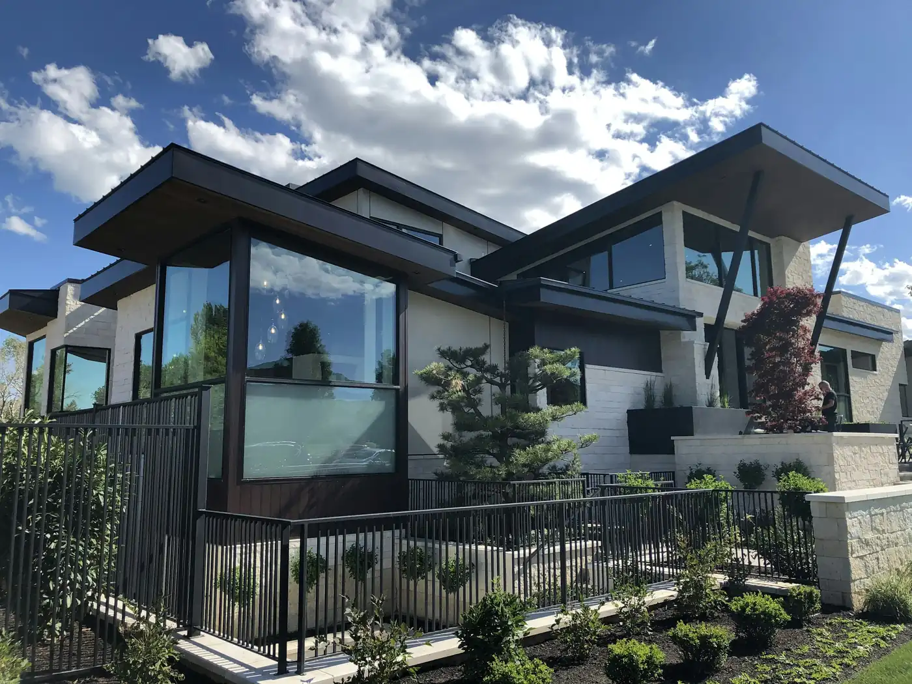
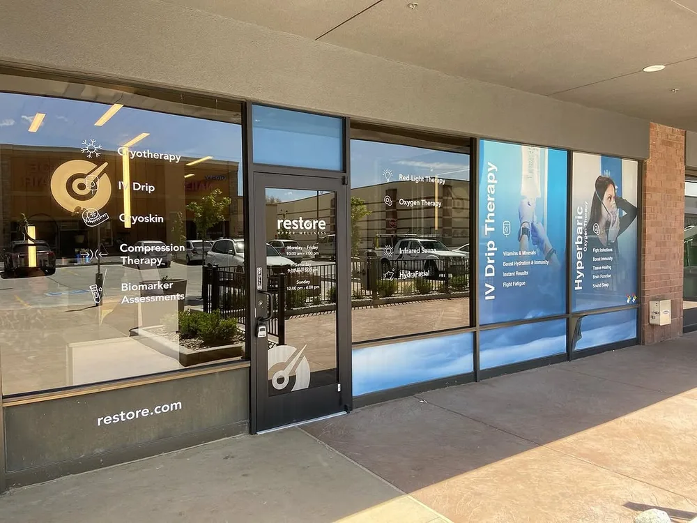

Spotless windows for homes and businesses: inside, outside, screens and tracks. We treat your home like our own and leave every pane clear.
Residential: every visit includes
- Hand-detailed glass. Squeegee finish inside, pure-water rinse outside.
- Frames and sills wiped. We clean the edges, not just the middle of the pane.
- Floors and plants protected. Drop cloths inside, care around landscaping outside.
- Final walk-through. We check the job with you before we leave.


Commercial: storefronts and offices that look open for business
Recurring service on a schedule that fits your hours. Monthly and quarterly plans come with a discount, and we invoice simply.

Pricing
| Service | Price |
|---|---|
| Exterior window cleaningPer pane, pure-water rinse | $4.00 |
| Interior window cleaningPer pane, hand detailed | $3.00 |
| Screen cleaningPer screen, washed and rinsed | $2–3 |
| Window track deep cleaningPer track, vacuumed and wiped | $5–10 |
| Solar panel cleaningPer panel, pure water only | $4–6 |
| Hard-water stain removalDepends on buildup | Quoted |
$150 minimum per visit. Most homes land above it. Monthly and quarterly plans are discounted.
Common questions
01How much does window cleaning cost?
Exterior panes are $4 each and interior panes are $3 each. Screens and tracks are extra, and every visit has a $150 minimum. Get an instant quote for an exact price for your home.
02Do I need to be home?
Only for interior cleaning. For exterior-only visits, just leave gates unlocked and we’ll text you when we’re done.
03What if it rains after my clean?
Pure-water cleaning leaves no soap residue for rain to stick to, so light rain usually dries without spotting.
04How often should I clean my windows?
Most homes look best with two to four cleans a year. Monthly and quarterly plans are discounted.